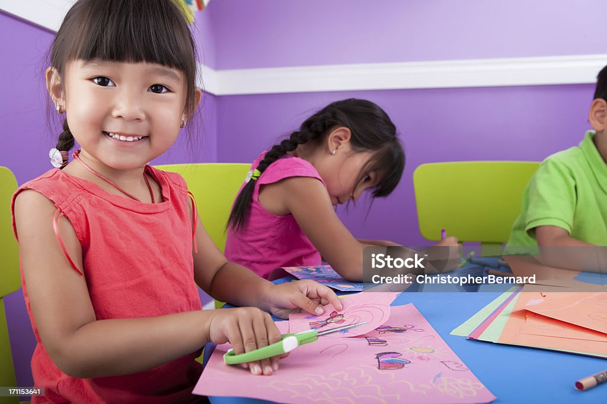

Quality Education (SDG 4)
Ensuring inclusive and equitable quality education and promoting lifelong learning opportunities for all
Introduction to SDG 4: Quality Education
Sustainable Development Goal 4 aims to "ensure inclusive and equitable quality education and promote lifelong learning opportunities for all" by 2030. Education is a fundamental human right and is essential for the achievement of sustainable development. It empowers people to break from the cycle of poverty, fosters tolerance, and contributes to building more peaceful societies.
Quality education is the foundation upon which we can build a more prosperous, peaceful, and sustainable world. It equips individuals with the knowledge, skills, and values needed to lead fulfilled lives, make informed decisions, and contribute positively to society. SDG 4 acknowledges the transformative power of education and sets ambitious targets to improve access to education at all levels and for all people regardless of gender, geographical location, or socioeconomic status.
Current State of Education Globally
Despite significant progress in expanding access to education over the past decades, major challenges persist. Millions of children and youth remain out of school, and many more are in school but not learning the fundamental skills they need for life and work.
Primary Education
While global primary school enrollment rates have increased significantly, approximately 58 million children of primary school age were still out of school as of 2023. Regional disparities remain pronounced, with Sub-Saharan Africa and parts of Asia facing the greatest challenges.
Secondary Education
Secondary school enrollment rates lag behind primary rates, with only about 66% of young people enrolled worldwide. Gender disparities become more pronounced at this level in many regions, with girls often at a disadvantage.
Higher Education
Access to higher education remains highly unequal both between and within countries. Globally, only about 40% of young people are enrolled in some form of tertiary education, with rates much lower in developing countries.
Learning Outcomes
Even among students who attend school, learning outcomes are often poor. An estimated 617 million children and adolescents worldwide cannot read a simple text or perform basic mathematics, despite many being in school.
Key Targets of SDG 4
SDG 4 encompasses 10 targets covering different aspects of education, from early childhood to adult learning. These targets provide a comprehensive framework for addressing the multiple dimensions of the education challenge:
Target 4.1: Universal Primary and Secondary Education
By 2030, ensure that all girls and boys complete free, equitable and quality primary and secondary education leading to relevant and effective learning outcomes.
Target 4.2: Early Childhood Development
By 2030, ensure that all girls and boys have access to quality early childhood development, care and pre-primary education so that they are ready for primary education.
Target 4.3: Equal Access to Technical/Vocational and Higher Education
By 2030, ensure equal access for all women and men to affordable and quality technical, vocational and tertiary education, including university.
Target 4.4: Relevant Skills for Employment
By 2030, substantially increase the number of youth and adults who have relevant skills, including technical and vocational skills, for employment, decent jobs and entrepreneurship.
Target 4.5: Gender Equality and Inclusion
By 2030, eliminate gender disparities in education and ensure equal access to all levels of education and vocational training for the vulnerable, including persons with disabilities, indigenous peoples and children in vulnerable situations.
Target 4.6: Universal Literacy and Numeracy
By 2030, ensure that all youth and a substantial proportion of adults, both men and women, achieve literacy and numeracy.
Target 4.7: Education for Sustainable Development
By 2030, ensure that all learners acquire the knowledge and skills needed to promote sustainable development, including, among others, through education for sustainable development and sustainable lifestyles, human rights, gender equality, promotion of a culture of peace and non-violence, global citizenship and appreciation of cultural diversity and of culture's contribution to sustainable development.
Challenges in Achieving Quality Education
Despite widespread recognition of the importance of education, numerous challenges impede progress toward SDG 4 targets:
Funding Gaps
Education systems in many countries remain severely underfunded. UNESCO estimates an annual funding gap of $148 billion to achieve quality universal education from pre-primary to secondary levels in low and lower-middle-income countries.
Teacher Shortages
There is a global shortage of qualified teachers. To achieve universal primary and secondary education by 2030, the world needs to recruit 69 million new teachers.
Infrastructure Deficits
Many schools lack basic infrastructure such as electricity, clean water, sanitation facilities, and internet connectivity, which are essential for effective learning environments.
Conflict and Displacement
Armed conflicts and resulting displacement disrupt education for millions of children. Refugee children are five times more likely to be out of school than non-refugee children.
Digital Divide
The COVID-19 pandemic highlighted the stark digital divide that exists globally. In many developing countries, fewer than 20% of households have internet access, making online learning inaccessible for millions of students.
Quality vs. Quantity
While school enrollment rates have increased in many regions, the quality of education often lags behind. Many students attend school but do not achieve basic literacy and numeracy skills.
Innovative Solutions for Quality Education
Addressing the complex challenges in education requires innovative approaches and solutions:
Educational Technology
Digital technologies can expand access to quality education, particularly in remote or underserved areas. Mobile learning applications, open educational resources, and online courses can reach students who might otherwise be excluded from traditional education systems.
Teacher Training and Support
Investing in comprehensive teacher training programs and ongoing professional development is essential for improving educational quality. Well-prepared teachers are the single most important school-based factor in student achievement.
Community-Based Education
Community schools and locally-driven education initiatives can be particularly effective in reaching marginalized populations. These approaches involve communities in designing and implementing education programs that meet local needs and respect local cultures.
Public-Private Partnerships
Collaborations between governments, businesses, and civil society organizations can leverage diverse resources and expertise to strengthen education systems. These partnerships can help address funding gaps and introduce innovative approaches to education delivery.
Education in Emergencies
Specialized approaches for providing education in conflict zones, refugee camps, and other emergency situations are crucial for ensuring that learning continues even in the most challenging circumstances.
Success Stories in Education
Despite the challenges, there have been remarkable successes in expanding access to quality education around the world:
Vietnam's Education Transformation
Vietnam has achieved remarkable progress in education, with learning outcomes that surpass those of many wealthier nations. The country's focus on equitable access, quality teaching, and accountability has led to some of the highest PISA scores in Southeast Asia, despite Vietnam's relatively low income level.
Kenya's Digital Learning Program
Kenya's Digital Literacy Program has distributed over one million digital devices to primary schools across the country, integrating technology into the curriculum and improving digital literacy among both students and teachers.
Finland's Teacher-Focused Approach
Finland is renowned for its high-quality education system, which emphasizes teacher preparation and professionalism. All teachers are required to have a master's degree, and the teaching profession is highly respected and competitive.
How to Get Involved
Everyone can contribute to advancing quality education. Here are some ways to get involved:
For Individuals
- Volunteer with local education initiatives or literacy programs
- Mentor students from disadvantaged backgrounds
- Advocate for education funding and policies that promote equity
- Support educational organizations through donations or fundraising
- Stay informed about education issues and share knowledge with others
For Organizations
- Develop corporate social responsibility programs focused on education
- Partner with schools or educational NGOs to provide resources or expertise
- Offer internships or work-based learning opportunities for students
- Support employee volunteering in educational initiatives
- Invest in educational technology and innovation
For Educators
- Implement inclusive teaching practices that reach all students
- Integrate education for sustainable development into curricula
- Pursue ongoing professional development to enhance teaching skills
- Collaborate with colleagues to share best practices and innovations
- Engage with parents and communities to strengthen educational support systems
By working together across sectors and borders, we can build education systems that provide quality learning opportunities for all and contribute to a more sustainable and peaceful world.